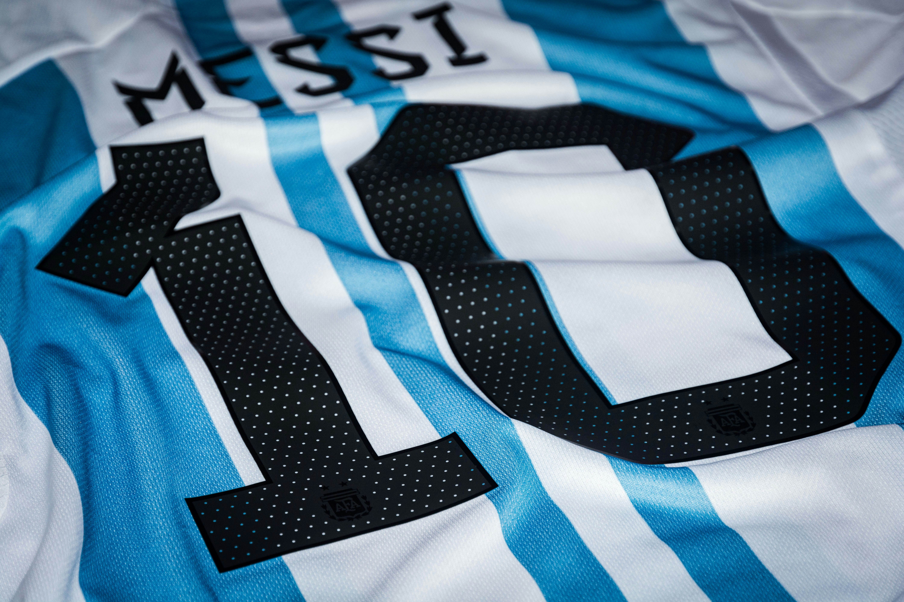
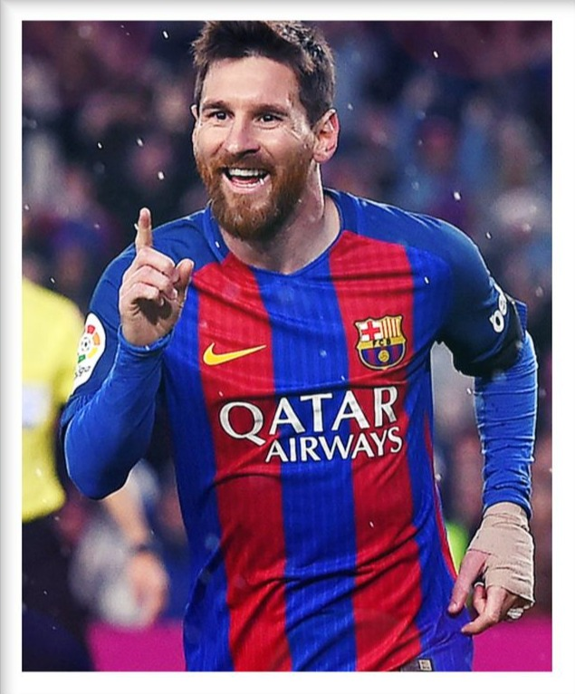
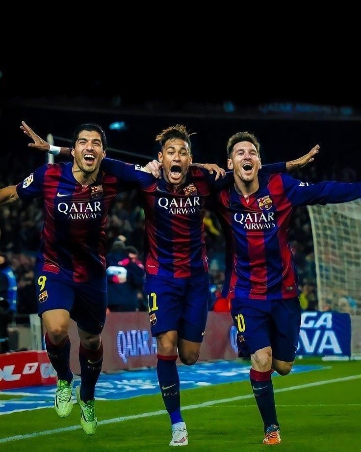

Lionel Messi

Lionel Messi es un futbolista argentino considerado uno de los mejores jugadores de la historia. Ha ganado numerosos títulos con sus clubes y con la selección argentina, incluyendo la Copa del Mundo 2022.

Lionel Messi es un futbolista argentino considerado uno de los mejores jugadores de la historia. Ha ganado numerosos títulos con sus clubes y con la selección argentina, incluyendo la Copa del Mundo 2022.
Lionel Messi nació el 24 de junio de 1987 en Rosario, Argentina. Desde pequeño mostró un talento extraordinario para el fútbol y comenzó a jugar en las divisiones juveniles del club Newell's Old Boys.
A los 13 años se trasladó a España después de que el FC Barcelona ofreciera cubrir su tratamiento médico para un problema de crecimiento. En el club catalán desarrolló la mayor parte de su carrera y se convirtió en uno de los jugadores más importantes de la historia del fútbol.
A lo largo de su carrera ha ganado numerosos títulos nacionales e internacionales, además de múltiples premios individuales. En 2022 alcanzó uno de los momentos más importantes de su carrera al ganar la Copa del Mundo con la selección argentina.

Ganó 4 veces la UEFA Champions League con el Barcelona.
Messi ganó la Copa del Mundo con Argentina en 2022, coronando su carrera con el título más importante a nivel de selecciones.
 Balones de oro de Messi ganados durante su instancia en Barcelona, exhibidos en el Museo del estadio Camp Nou.
Balones de oro de Messi ganados durante su instancia en Barcelona, exhibidos en el Museo del estadio Camp Nou.
 Messi con la camiseta de FC Barcelona, celebrando un gol.
Messi con la camiseta de FC Barcelona, celebrando un gol.
 Messi posando el trofeo de la Copa del Mundo tras la victoria de Argentina ante la selección de Francia en Qatar 2022.
Messi posando el trofeo de la Copa del Mundo tras la victoria de Argentina ante la selección de Francia en Qatar 2022.

Inexplicable, así era la MSN: Messi, Suárez y Neymar celebrando un gol con el Barcelona.